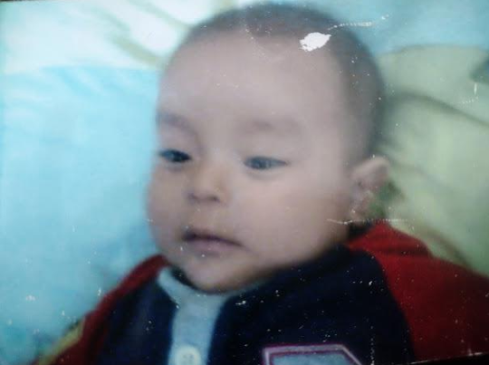
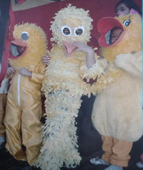
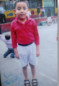
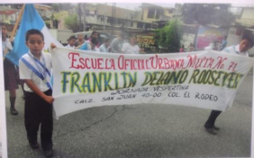
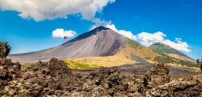
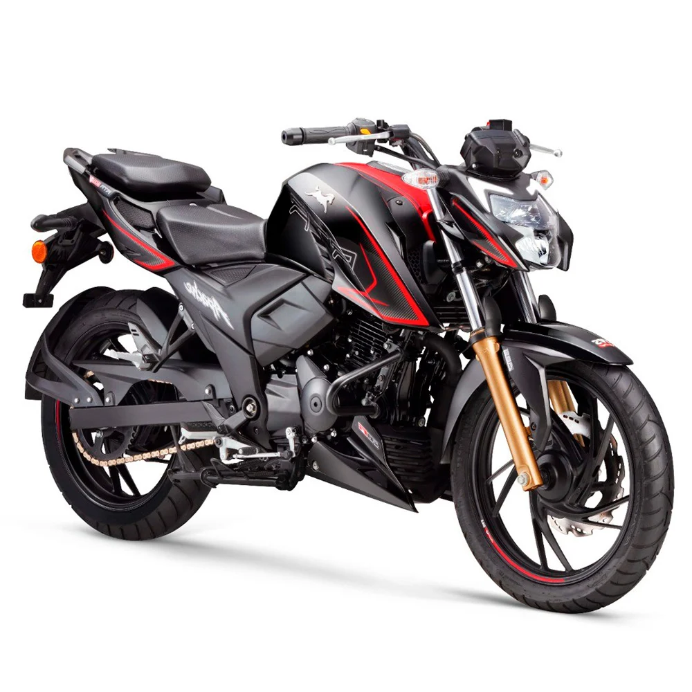
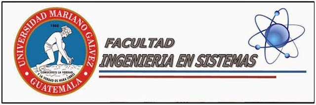
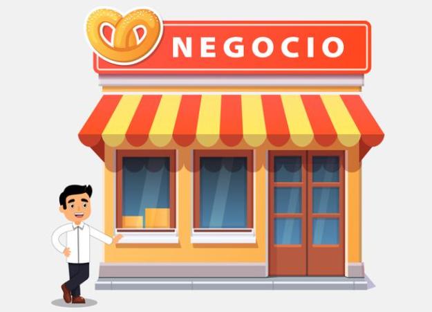
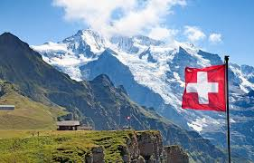
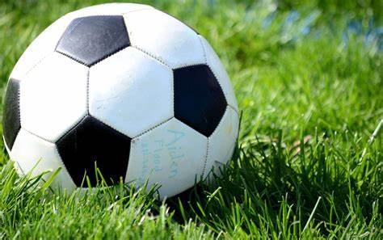

🌟 Bienvenidos a mi Proyecto Personal 🌟
¡Hola! Mi nombre es Wilson Geovanny Hernández y esta es una pequeña ventana a mis sueños, metas y aspiraciones.
En esta página, compartiré contigo quién soy, de dónde vengo, qué me inspira y hacia dónde quiero ir.
Hablaré de mis valores, mis metas personales y profesionales, mis pasiones, mis temores, y sobre todo,
de la visión que tengo para mi vida. Creo firmemente que tener un propósito claro es lo que nos impulsa cada día,
y este proyecto representa el mapa de ese propósito.
Historia familiar
En dos lugares muy distintos de Guatemala.
Mi papá nació en Cobán, Alta Verapaz, una tierra llena de montañas y cafetales.
Por otro lado mi mamá vino al mundo en Jalapa, un departamento lleno de culturas, desde pequeños aprendieron que la vida no siempre es fácil, pero que con esfuerzo se puede salir adelante, crecieron en una familia unida, donde los valores y el amor por los demás eran parte de cada día, pero economicamente no eran estables y era lo uqe les faltaba. Desde joven, mis padres soñaban
con un futuro mejor y sabían que para lograrlo debían dar pasos grandes.
Ambos, en diferentes momentos de sus vidas, decidieron migrar hacia la Ciudad de Guatemala en busca de nuevas oportunidades, dejaron atrás a su familia, pero también con miedo d elo que vendria, llegaron
a la capital con la intención de luchar por un mejor futuro.
Pero el destino los unió, sus caminos se cruzaron cuando ambos fueron a unas piscinas. Se conocieron, se enamoroaron con el tiempo y de ese amor nací yo un hijo fruto del encuentro entre dos mundos distintos,
Mi vida comenzó en la capital, pero llevo en mi corazón en Cobán y de Jalapa ya que naci en coban pero solo estube alla dos semanas despues de que naci.
Mi Niñez
Yo nací el 2 de noviembre de 2005 cuando transcurrían las 13:30pm, trece horas con treinta minutos en el hospital
general Helen Losin en el departamento de Alta Verapaz, en el cual estaba mi papá con mi abuela y abuelo en
la sala de espera, esperando a que nazca y en el cual no hubo complicación en el parto gracias a Dios, nos fuimos
a Cobán porque mi abuela nos iba a cuidar, pero nos regresamos a la capital a los 15 días de que naciera.
Fui bautizado en la iglesia católica, en una ceremonia muy especial en la que me acompañaron mis abuelos.
Ese momento marcó el inicio de mi vida espiritual y familiar, rodeado de amor y bendiciones aun que actualmente no me considero catolico si no criatiano pero no deja de ser al mismo Dios que adoro y amo.

Toda mi infancia la viví estudiando en la escuela Franklin Vespertina del Ano Roosevelt
Empecé desde pre-kínder y estuve allí hasta cuarto primaria.
Fueron años llenos de aprendizajes y experiencias inolvidables. tambien abanderado varias veces, lo cual fue un gran orgullo tanto para mí como para mi familia y participé en varios actos cívicos, bailes y disfraces. Me encantaba formar parte de todo lo que hacía la escuela, porque me sentía parte de algo grande y especial.



A la edad de 8 años enfrenté uno de los momentos más difíciles de mi infancia:
tuve un problema de salud y me tuvieron que operar los oídos.
Fue una etapa de miedo y muchas preguntas, pero gracias a Dios y al apoyo de mi familia,
la operación salió bien y pude seguir adelante con mi vida normalmente.
Uno de los recuerdos más bonitos que tengo de esa etapa fue cuando, gracias a la escuela,
pude asistir a un campamento cristiano. Fue una experiencia única donde aprendí mucho sobre valores, compañerismo y fe, además, tuvimos la oportunidad de subir al volcán Pacaya. ¡Fue increíble!
Tenía apenas 11 años, y ese momento quedó grabado en mi corazón como una gran aventura.

A los 11 me mudé a Ciudad Quetzal y comencé a estudiar en la escuela Bosques del Quetzal.
Al principio fue difícil adaptarme al nuevo entorno, pero lo tomé como un nuevo comienzo.
Sin embargo, al poco tiempo, enfrentamos una de las pruebas más duras como familia: se podria decir lo mas duro, mi papá sufrió un accidente en moto. Fue un momento muy doloroso, lleno de incertidumbre y miedo.
Pero Dios nos dio el milagro apesar de todo, él sigue con nosotros y cada día que pasa es una bendición más.
A partir de ahí, aprendí a valorar más a mi familia, la vida y cada momento. !NO se que haria, ni fuera sin papa!
Mi adolescencia
Comenzó en la pandemia del COVID-19. Fue una etapa difícil, distinta, en la que muchas cosas cambiaron de un día para otro. Tuve que adaptarme a un nuevo estilo de vida en la cual estudie en línea desde casa, en el colegio cristiano Fuentes de Luz, donde continué mi formación académica aunque de manera virtual.
A pesar del encierro, los toques de queda y las restricciones, encontraba momentos para salir a jugar pelota cuando no estaba permitido y era bonito correr de la policia esos pequeños momentos se volvieron grnades recuerdos en medio de una situación, en esos años también me aficioné a los videojuegos. Logré terminar el famoso juego Call of Duty modo zombi, algo que me dio alegría y una sensación de logro ya que lo completamos con unos amigos
A los 16 años aprendí a manejar moto fue una experiencia emocionante que me hizo sentir muy bien y es algo de lo que mas me gusta hacer hoy en dia, pero también ese mismo año, enfrenté otro desafortunado probelma en mi perosan pero esta vez eran mis ojoe, me examen de la vista y descubrí que no puedo ver con uno de mis ojos, y con el otro solo un poco. Según el médico, nací así, y por eso ahora debo usar lentes para proteger y mejorar mi visión. Fue un golpe duro al principio, pero no queda de otro mas que aceptar, usar lentes y cuidar mucho mi vista.
A los 17 años, empecé a hacer nuevas amistades que se volvieron muy importantes para mí. Con ellos viví experiencias únicas como salidas a la playa, viajes al IRTRA, días en la piscina y juegos de boliche, que probé por primera vez. Fueron momentos de risa, que extraño
Academico
estudie en la escuela lalmada Frnaklin Vespertina del Ano Roosvelt de prepirmaria hasta cuarto primaria, luego cuando me vine a vivir a Ciudad Quetzal estudie en la escuela Bosques 6 de quinto a sexto primaria y basicos los estudie en el colegio Fuentes de Luz de primero basico hasta terminar la carrera de divesdificado que termnie en 2024 de perito en Administración. Actualmente estudio el primer semestre de Ingenieria en Sistemas en la Universidad Mariano Galves de Guatemala
Personal
Mis Metas
1. Comprar un medio de transporte
Una de mis metas a corto plazo es adquirir un medio de transporte propio, para tener mejor mobilidad de ir al tabajo y la Universidad, facilitando mis actividades cotidianas, por ahora una moto y alago plazo primero Dios un carrito.

2. Graduarme de Ingeniero en Sistemas y Maestria en Ciberseguridad
Uno de mis mayores objetivos es graduarme con éxito mis estudios y graduarme como Ingeniero en Sistemas y una maestria en ciberseguridad. Esta meta representa un paso muy grnade en mi desarrollo profesional, ya que me permitirá conseguir una mejor oportunidad laborales y continuar aprendiendo en el área de la tecnología. Se que sera muy complicado pero en nombre de Dios.

3. Emprender un negocio propio
Quiero emprender un negocio que combine mis conocimientos en sistemas con las necesidades del mercado. O y a sea varias tiendas de barrio la idea es no depender de una empresa para obtner un salario, o emprender una empresa que brinde servicios como instalación de cámaras de seguridad, soporte técnico o soluciones tecnológicas para diferentes tipos de clientes.

4. Viajar a Suiza
Viajar a Suiza es uno de mis sueños personales. Me gustaría conocer sus hermosos paisajes, montañas, lagos y experimentar su estilo de vida. Deseo ir algun día

Pasatiempos
- Jugar futbol
- Salir a rodar en moto
- Escuchar música
- Salir a comer
- Ver anime
Deportes
Unicamente el deporte que práctico, veo, juego, escucho es el futbol es un deporte hermoso que te llena de alegria pero tmabien de tristesa

lo que me gusta
- La coca cola
- la pizza y hamburguesas
- pasasr tiempo con seres queridos y pajeras
- El anime de one piece
- El futbol
- Las motos
- El frio
Lo que no me gusta
- Las verduras
- Que me falten el respeto
- no me gusta beber ni fumar
- No me gusta el trafico de la ciudad
- las personas que humillan a otros
A quienes admiro
1. Mis padres
Admiro profundamente a mis padres porque han sido un ejemplo constante de esfuerzo, dedicación y amor incondicional. Aunque no siempre tuvimos lujos ellos me ofrecieron cosas aún más valiosas: un hogar lleno de cariño, su tiempo, sus consejos, su apoyo incondicional, sin maltrato, la seguridad de saber que siempre contaré con ellos que vale mucho mas que cual queir otra cosa . Han luchado con muchas dificultades para que yo pudiera salir adelante, y gracias a su esfuerzo hoy soy la persona que soy. Me enseñaron a valorar lo importante, a trabajar duro a no rendirme y sobre todo a amar. al decir verdad ellos son mis verdaderos héroes.
2. Lionel Messi
a nivel de famosos admiro a Lionel Messi no solo por su talento como futbolista, sino por su historia de vida porque desde muy pequeño enfrentó grandes obstáculos, como una condición médica que le dificultaba crecer, y sin embargo nunca dejó de luchar por sus sueños. Su esfuerzo, humildad y constancia lo llevaron a convertirse en uno de los mejores jugadores de la historia del fútbol. A pesar de su fama, sigue siendo una persona sencilla, centrada en su familia y en su pasión y con lo del mundial desde joven soñaba en ganrlo y en 2024 estuvo a punto quednandop segundo lugar él queria conseguir un titulo para argentina y no podia aun que lo intaba pero en resumen no fue hasta 2022 que gano es tan apreciado Mundial que verlo feliz hizo no solo a mi llorar de alegria si no a muchas persoanas. por eso su trayectoria me inspira a no rendirme, a confiar en mis capacidades y a entender que, con trabajo duro, los sueños sí se pueden lograr.
3. Monkey D. Luffy (One Piece)
Aunque es un personaje de anime (ficcion), admiro mucho a Luffy, el protagonista de One Piece. Él representa valores muy importantes para mí: siempre sonríe, es optimista incluso en los momentos más difíciles, y nunca deja de luchar por su sueño de convertirse en el Rey de los Piratas. Pero más allá de su sueño, Luffy destaca por su bondad, su lealtad hacia sus amigos y su deseo de ayudar a los demás sin esperar nada a cambio porque siempre busca la manera de ayudar y hacer lo corecto. Me inspira su forma de ver la vida, su valentía y su determinación para superar cualquier obstáculo con una sonrisa en el rostro y desearaia tneer la alegria que ese personaje tiene y transmite.
videos
Sitios recomendados
|